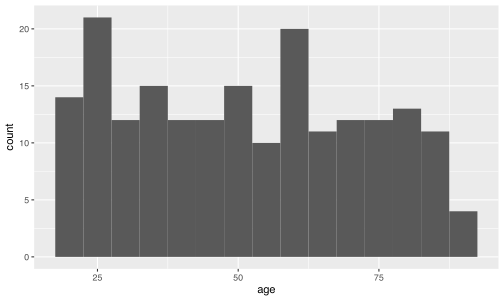

# load the multiple core tidyverse packages all at once
library(tidyverse)
# skip = 2 drops the title line and blank line sitting above the real header
clinic_raw = read_csv("data/clinic_raw.csv", skip = 2)
head(clinic_raw)
#> # A tibble: 6 × 8
#> patient_id site sex age visit_date blood_pressure weight_kg notes
#> <chr> <chr> <chr> <dbl> <chr> <chr> <chr> <chr>
#> 1 PT-0001 site a <NA> 70 06/02/2023 180/64 mmHg 79.1 Stable
#> 2 PT-0002 site a F 41 13/09/2023 97/74 mmHg 65.3 follow up
#> 3 PT-0003 site a <NA> 55 12/12/2023 133/72 mmHg 82.1 <NA>
#> 4 PT-0004 site a F 37 26/06/2023 133/70 mmHg 62.5 stable
#> 5 PT-0005 Site B M 50 29/07/2023 101/62 mmHg 50.4 discharged
#> 6 PT-0006 site_d F 53 11/11/2023 98/75 mmHg 84.9 FOLLOW UPData wrangling
Real datasets are almost never as clean as viz_data.csv has been so far. In this chapter you’ll get comfortable with the messiness that shows up in real public health data, learn how to check a dataset for problems before you trust it, and build up a reproducible cleaning workflow using some of the most common dplyr and stringr functions you’ll reach for again and again.
Data setup
For this chapter we’ll use a deliberately messy dataset, clinic_raw.csv, styled after the kind of export you might get from a clinic’s Excel records. Download it and move it into your data folder before continuing.
Notice the skip = 2 argument to read_csv(). The raw file has two junk lines above the real header (a title line and a blank line), a common situation when exporting from Excel, and skip tells R to ignore a fixed number of lines at the top of the file before looking for column names. If you only need specific columns or rows rather than skipping a fixed block, read_csv()’s col_select argument and ordinary row indexing (e.g. clinic_raw[1:20, ]) work the same way they did with viz_data.csv.
1:20 is shorthand for seq(1, 20, by = 1), a function that generates a sequence of numbers from a starting value to an ending value at a given increment. The colon operator (:) is just a quick way to write this when your increment is 1 (or -1 when counting downward), but seq() is worth knowing too, since it lets you control the increment directly, for example generating every second or every tenth number in a range.
1:20 # shorthand sequence from 1 to 20, increment of 1
#> [1] 1 2 3 4 5 6 7 8 9 10 11 12 13 14 15 16 17 18 19 20
seq(1, 20, by = 1) # explicit equivalent of 1:20
#> [1] 1 2 3 4 5 6 7 8 9 10 11 12 13 14 15 16 17 18 19 20
seq(1, 20, by = 5) # 1:20 can't do this, seq() lets you set the increment
#> [1] 1 6 11 16The messiness of real-world data
Two problems show up immediately if you inspect clinic_raw. First, missing values aren’t always stored as true NA. Here, blood_pressure uses "N/A" and weight_kg uses "-" for missing entries, both of which R reads in as ordinary text rather than recognising them as missing. Second, columns that should be numeric, like blood_pressure (which packs two readings and a unit into one field, e.g. "120/80 mmHg") and weight_kg, get read in as character columns instead, a process called coercion, because a single non-numeric value anywhere in the column forces the whole column to be stored as text.
str(clinic_raw) # lists each column's name and type in one compact view
#> spc_tbl_ [200 × 8] (S3: spec_tbl_df/tbl_df/tbl/data.frame)
#> $ patient_id : chr [1:200] "PT-0001" "PT-0002" "PT-0003" "PT-0004" ...
#> $ site : chr [1:200] "site a" "site a" "site a" "site a" ...
#> $ sex : chr [1:200] NA "F" NA "F" ...
#> $ age : num [1:200] 70 41 55 37 50 53 62 39 61 81 ...
#> $ visit_date : chr [1:200] "06/02/2023" "13/09/2023" "12/12/2023" "26/06/2023" ...
#> $ blood_pressure: chr [1:200] "180/64 mmHg" "97/74 mmHg" "133/72 mmHg" "133/70 mmHg" ...
#> $ weight_kg : chr [1:200] "79.1" "65.3" "82.1" "62.5" ...
#> $ notes : chr [1:200] "Stable" "follow up" NA "stable" ...
#> - attr(*, "spec")=
#> .. cols(
#> .. patient_id = col_character(),
#> .. site = col_character(),
#> .. sex = col_character(),
#> .. age = col_double(),
#> .. visit_date = col_character(),
#> .. blood_pressure = col_character(),
#> .. weight_kg = col_character(),
#> .. notes = col_character()
#> .. )
#> - attr(*, "problems")=<externalptr>You’ll fix both of these problems later in this chapter, once you’ve seen the cleaning functions designed for exactly this job.
Checking data quality
Before cleaning anything, it’s worth getting an honest picture of what’s actually in your dataset.
-
is.na()checks, value by value, whether an entry is missing, and is most useful combined withsum()to count how many missing values a column has. -
range()returns the minimum and maximum of a numeric variable, handy for spotting impossible values (e.g., a negative age). -
summary()gives you a quick five-number-summary-plus-mean for numeric columns, and a count of each category for character or factor columns, all in one call.
range(clinic_raw$age, na.rm = TRUE) # na.rm drops NAs before computing min/max
#> [1] 18 90summary(clinic_raw)
#> patient_id site sex age
#> Length:200 Length:200 Length:200 Min. :18.00
#> Class :character Class :character Class :character 1st Qu.:33.25
#> Mode :character Mode :character Mode :character Median :51.00
#> Mean :51.65
#> 3rd Qu.:69.75
#> Max. :90.00
#> NA's :6
#> visit_date blood_pressure weight_kg notes
#> Length:200 Length:200 Length:200 Length:200
#> Class :character Class :character Class :character Class :character
#> Mode :character Mode :character Mode :character Mode :character
#>
#>
#>
#> Numbers alone don’t always tell the full story, so it’s worth pairing these checks with a quick plot. A histogram of age, for instance, can reveal implausible spikes or gaps that summary statistics alone might not make obvious.
library(ggplot2)
ggplot(clinic_raw, aes(x = age)) +
geom_histogram(binwidth = 5, na.rm = TRUE)
Reproducible data cleaning
The rest of this chapter walks through a toolkit of functions for turning clinic_raw into something trustworthy, one small, well-named step at a time, so that anyone (including future you) can re-run your script and get the exact same cleaned dataset back out.
Renaming, creating, and selecting columns
-
rename()changes a column’s name without touching its values. -
mutate()creates a new column, or overwrites an existing one, based on some calculation. -
select()keeps (or drops, with a-) specific columns. -
filter()keeps only the rows that match a condition.
Sorting rows
-
arrange()sorts rows by one or more columns, smallest to largest by default. - Wrapping a column in
desc()insidearrange()sorts it largest to smallest instead.
clinic_clean %>% arrange(age) %>% head() # youngest patients first
#> # A tibble: 6 × 8
#> id site sex age visit_date blood_pressure weight_kg notes
#> <chr> <chr> <chr> <dbl> <chr> <chr> <chr> <chr>
#> 1 PT-0070 site a <NA> 18 18/10/2023 132/103 mmHg 74.8 discharged
#> 2 PT-0110 site a M 18 15/06/2023 119/77 mmHg 81.5 <NA>
#> 3 PT-0196 Site B F 18 07/07/2023 149/78 mmHg 73.3 stable
#> 4 PT-0019 Site B F 19 15/02/2023 180/63 mmHg 53.6 follow up
#> 5 PT-0055 site_d M 19 21/01/2023 100/97 mmHg 63.7 Stable
#> 6 PT-0153 site a M 19 16/09/2023 95/86 mmHg 72.2 stableclinic_clean %>% arrange(desc(age)) %>% head() # oldest patients first
#> # A tibble: 6 × 8
#> id site sex age visit_date blood_pressure weight_kg notes
#> <chr> <chr> <chr> <dbl> <chr> <chr> <chr> <chr>
#> 1 PT-0029 site a M 90 30/08/2023 151/81 mmHg 59.8 Stable
#> 2 PT-0161 site a F 89 20/01/2023 172/79 mmHg 53.1 stable
#> 3 PT-0171 site_d M 89 25/01/2023 96/62 mmHg 67.4 follow up
#> 4 PT-0026 site_d <NA> 88 25/09/2023 122/87 mmHg 62.8 FOLLOW UP
#> 5 PT-0053 site_d M 87 09/07/2023 172/91 mmHg 73.2 Stable
#> 6 PT-0094 site_d F 87 01/06/2023 138/93 mmHg 72 FOLLOW UPGrouped summaries
-
group_by()splits your data into groups based on one or more columns, without changing how it looks yet. -
summarise()then collapses each group down to a single summary row, using whatever calculation you specify.
Cleaning up text
Notice that site has inconsistent spacing, capitalisation, and even an underscore in one category, and notes has similar inconsistencies. These are exactly the kind of problems the next set of functions fix.
-
trimws()removes leading and trailing whitespace from text. -
toupper()andtolower()convert text to all-uppercase or all-lowercase, which is a simple way to make categories consistent when only their capitalisation differs. -
substring()extracts a portion of a string based on start and end character positions. -
sub()replaces the first match of a pattern in a string with something else, while its cousingsub()replaces all matches.
substring("PT-0001", 4, 7) # characters 4 through 7: "0001"
#> [1] "0001"Regular expressions
Sometimes the pattern you want to match or extract is more flexible than a fixed piece of text, that’s where regular expressions come in, a mini-language for describing patterns in text.
-
str_extract()(from thestringrpackage) pulls out the part of a string that matches a pattern. -
gsub()can also take a regular expression as its pattern, not just a fixed string, making it useful for replacing anything that looks like a pattern (e.g., “any digits”) rather than one exact value.
Recall that blood_pressure packs two readings into one field, like "120/80 mmHg". We can pull out the systolic (before the /) and diastolic (after the /) readings separately using two different regular expressions.
library(stringr)
clinic_clean =
clinic_clean %>%
mutate(
bp_upper = as.numeric(str_extract(blood_pressure, "^[0-9]+")) # digits before the "/"
, bp_lower = as.numeric(str_extract(blood_pressure, "(?<=/)[0-9]+")) # digits after the "/"
)
head(clinic_clean[, c("blood_pressure", "bp_upper", "bp_lower")])
#> # A tibble: 6 × 3
#> blood_pressure bp_upper bp_lower
#> <chr> <dbl> <dbl>
#> 1 180/64 mmHg 180 64
#> 2 97/74 mmHg 97 74
#> 3 133/72 mmHg 133 72
#> 4 133/70 mmHg 133 70
#> 5 101/62 mmHg 101 62
#> 6 98/75 mmHg 98 75gsub("[^0-9.]", "", "72.5 kg") # strip everything except digits and "."
#> [1] "72.5"-
grep()returns the positions (or, withvalue = TRUE, the actual values) of the elements in a vector that match a pattern. -
grepl()returns aTRUE/FALSEfor every element, indicating whether it matches the pattern, which is especially handy insidefilter().
grep("follow", clinic_clean$notes, ignore.case = TRUE) # ignore.case catches "FOLLOW UP" and "follow up"
#> [1] 2 6 11 13 15 16 19 20 21 23 25 26 27 30 33 34 36 39 41
#> [20] 45 46 49 50 58 59 68 69 76 78 79 82 83 87 90 94 98 99 103
#> [39] 105 109 114 117 118 119 121 122 123 124 125 128 133 135 137 139 141 146 148
#> [58] 149 150 152 154 155 158 162 163 169 171 172 174 176 177 180 186 193 198clinic_clean %>% filter(grepl("follow", notes, ignore.case = TRUE))
#> # A tibble: 75 × 10
#> id site sex age visit_date blood_pressure weight_kg notes bp_upper
#> <chr> <chr> <chr> <dbl> <chr> <chr> <chr> <chr> <dbl>
#> 1 PT-0002 site a F 41 13/09/2023 97/74 mmHg 65.3 foll… 97
#> 2 PT-0006 site d F 53 11/11/2023 98/75 mmHg 84.9 FOLL… 98
#> 3 PT-0011 site c F 24 10/08/2023 96/56 mmHg 79.2 foll… 96
#> 4 PT-0013 site c M 48 28/05/2023 176/87 mmHg 65.6 FOLL… 176
#> 5 PT-0015 site a F 56 03/10/2023 138/85 mmHg 82.7 foll… 138
#> 6 PT-0016 site a <NA> 30 05/06/2023 168/82 mmHg 77 FOLL… 168
#> 7 PT-0019 site b F 19 15/02/2023 180/63 mmHg 53.6 foll… 180
#> 8 PT-0020 site b <NA> 45 07/12/2023 N/A 64.8 FOLL… NA
#> 9 PT-0021 site c F 20 05/09/2023 108/71 mmHg 97.9 FOLL… 108
#> 10 PT-0023 site a F 26 08/04/2023 111/60 mmHg 81.6 foll… 111
#> # ℹ 65 more rows
#> # ℹ 1 more variable: bp_lower <dbl>Converting between data types
Recall from earlier that blood_pressure and weight_kg were coerced into character columns. Now that you’ve extracted bp_upper and bp_lower as numeric columns above, weight_kg still needs the same treatment, along with turning "N/A" and "-" into genuine NA values and fixing up visit_date.
-
as.numeric()andas.integer()convert text (or other numeric-like values) into numeric or whole-number form. -
as.character()converts a value into text. -
as.logical()converts a value intoTRUE/FALSE, recognising strings like"TRUE","FALSE","T", and"F". -
as.Date()converts text into an actual date object, using aformatargument to tell R how the text is currently laid out.
clinic_clean =
clinic_clean %>%
mutate(
weight_kg = na_if(weight_kg, "-") # turn placeholder "-" into real NA
, weight_kg = as.numeric(weight_kg) # now safe to convert to numeric
, visit_date = as.Date(visit_date, format = "%d/%m/%Y") # dd/mm/yyyy text -> Date
)
head(clinic_clean)
#> # A tibble: 6 × 10
#> id site sex age visit_date blood_pressure weight_kg notes bp_upper
#> <chr> <chr> <chr> <dbl> <date> <chr> <dbl> <chr> <dbl>
#> 1 PT-0001 site a <NA> 70 2023-02-06 180/64 mmHg 79.1 Stable 180
#> 2 PT-0002 site a F 41 2023-09-13 97/74 mmHg 65.3 follo… 97
#> 3 PT-0003 site a <NA> 55 2023-12-12 133/72 mmHg 82.1 <NA> 133
#> 4 PT-0004 site a F 37 2023-06-26 133/70 mmHg 62.5 stable 133
#> 5 PT-0005 site b M 50 2023-07-29 101/62 mmHg 50.4 disch… 101
#> 6 PT-0006 site d F 53 2023-11-11 98/75 mmHg 84.9 FOLLO… 98
#> # ℹ 1 more variable: bp_lower <dbl>as.numeric() on a column that still has stray text in it (like "N/A" or a unit such as "mmHg") won’t error, it will just silently produce NA for every value it can’t parse, along with a warning message that’s easy to miss. Always check sum(is.na(x)) before and after a conversion like this to make sure you haven’t accidentally lost more data than you expected.
Conditional logic
-
ifelse()checks a condition for every element of a vector and returns one value if it’sTRUEand another if it’sFALSE. -
case_when()extends this same idea to any number of conditions, checked in order, which is much easier to read than nesting severalifelse()calls inside each other.
clinic_clean =
clinic_clean %>%
mutate(
bp_category = case_when(
is.na(bp_upper) ~ NA_character_ # keep missing as missing
, bp_upper < 120 ~ "Normal"
, bp_upper < 140 ~ "Elevated"
, TRUE ~ "High" # catch-all for anything left
)
)
table(clinic_clean$bp_category, useNA = "always")
#>
#> Elevated High Normal <NA>
#> 46 86 52 16Writing your own functions
Once you notice yourself repeating the same few lines of cleaning code on more than one column, it’s worth wrapping that logic into your own function instead of copying and pasting it. A function you write yourself works exactly like mean() or filter(), you just define what it does once, then call it by name wherever you need it.
Reshaping data
-
pivot_longer()takes several columns and stacks them down into two columns, a “names” column and a “values” column, making wide data longer. -
pivot_wider()does the reverse, spreading one column’s values out into multiple new columns, making long data wider.
bp_upper and bp_lower are a natural pair to reshape here: they’re both numeric blood pressure readings taken at the same visit, just two components of one measurement, so stacking them into a single value column (tagged by a reading column saying which is which) actually makes sense, unlike forcing together two columns of different kinds of data.
clinic_clean %>%
select(id, bp_upper, bp_lower) %>%
head(4) %>%
tidyr::pivot_longer(
cols = c(bp_upper, bp_lower) # the two columns to stack
, names_to = "reading" # new column naming which reading it was
, values_to = "value" # new column holding the actual number
)
#> # A tibble: 8 × 3
#> id reading value
#> <chr> <chr> <dbl>
#> 1 PT-0001 bp_upper 180
#> 2 PT-0001 bp_lower 64
#> 3 PT-0002 bp_upper 97
#> 4 PT-0002 bp_lower 74
#> 5 PT-0003 bp_upper 133
#> 6 PT-0003 bp_lower 72
#> 7 PT-0004 bp_upper 133
#> 8 PT-0004 bp_lower 70clinic_clean %>%
group_by(site, sex) %>%
summarise(mean_age = mean(age, na.rm = TRUE), .groups = "drop") %>%
tidyr::pivot_wider(names_from = sex, values_from = mean_age)
#> # A tibble: 4 × 4
#> site Female Male `NA`
#> <chr> <dbl> <dbl> <dbl>
#> 1 site a 49.5 48.7 40
#> 2 site b 53.2 51.5 55.5
#> 3 site c 49.5 52.8 59.7
#> 4 site d 52.0 58.5 47Combining datasets
-
cbind()andrbind()glue data frames together side by side (by column) or stacked on top of each other (by row), assuming the pieces already line up correctly. -
merge()joins two data frames together by matching values in a shared column, base R’s way of doing what a database would call a join. -
left_join(),right_join(),anti_join(), andsemi_join()(fromdplyr) offer the same idea asmerge()but are usually easier to read:left_join()keeps every row from the first (left) table and attaches matching information from the second,right_join()does the same but keeps every row from the second table,anti_join()keeps only rows from the first table that have no match in the second, andsemi_join()keeps only rows from the first table that do have a match, without actually adding any of the second table’s columns.
site_lookup = data.frame(
site = c("site a", "site b", "site c", "site d")
, region = c("North", "North", "South", "South")
)clinic_clean =
clinic_clean %>%
left_join(site_lookup, by = "site") # attach region, keep every clinic_clean row
head(clinic_clean)
#> # A tibble: 6 × 12
#> id site sex age visit_date blood_pressure weight_kg notes bp_upper
#> <chr> <chr> <chr> <dbl> <date> <chr> <dbl> <chr> <dbl>
#> 1 PT-0001 site a <NA> 70 2023-02-06 180/64 mmHg 79.1 stab… 180
#> 2 PT-0002 site a Female 41 2023-09-13 97/74 mmHg 65.3 foll… 97
#> 3 PT-0003 site a <NA> 55 2023-12-12 133/72 mmHg 82.1 <NA> 133
#> 4 PT-0004 site a Female 37 2023-06-26 133/70 mmHg 62.5 stab… 133
#> 5 PT-0005 site b Male 50 2023-07-29 101/62 mmHg 50.4 disc… 101
#> 6 PT-0006 site d Female 53 2023-11-11 98/75 mmHg 84.9 foll… 98
#> # ℹ 3 more variables: bp_lower <dbl>, bp_category <chr>, region <chr>Pipes: %>% vs. |>
You’ve been using %>% throughout this chapter (from the magrittr package, loaded automatically with dplyr) to chain several steps together by passing the result of one line into the next. Base R now has its own built-in pipe, |>, which works the same way and doesn’t need any package loaded at all, since it’s part of R itself from version 4.1 onward.
In practice, the two behave almost identically for the everyday chaining you’ve done in this chapter, so you’ll see both used interchangeably across R code you come across. %>% has a couple of extra features (like letting you refer to the piped value with a . in more flexible positions) that |> doesn’t fully replicate, but for straightforward step-by-step pipelines like the ones here, neither is objectively better, and which one you use often just comes down to personal preference or what a particular course or workplace has standardised on.
Exporting cleaned data
Once your data is clean, you’ll want to save it out so you (or a collaborator) don’t have to repeat the cleaning steps every time.
-
writeLines()writes plain text, line by line, to a file, useful for simple text output but not really designed for tabular data. -
write.table()writes a data frame to a text file, with arguments controlling the separator, whether to include row names, and so on, base R’s general-purpose export function. -
write.csv()iswrite.table()with sensible defaults baked in for comma-separated files, the base R equivalent ofread.csv(). -
write_csv()(fromreadr) does the same job aswrite.csv(), but is faster on large datasets and never writes row names by default, avoiding a common annoyance with the base R version.
write_csv(clinic_clean, "data/clinic_clean.csv")Exercise 2.2
In a new script file,
- Import
clinic_raw.csvyourself usingread_csv(), remembering to skip the junk lines at the top of the file, and usestr()andsummary()to check which columns have missing values or the wrong data type. - Clean at least three problems you find: fix a column with the wrong type (using
as.numeric(),as.Date(), or similar), standardise a text column’s capitalisation or spacing, and turn a placeholder like"N/A"or"-"into a trueNA. - Use
group_by()andsummarise()to calculate the meanage(or another numeric variable of your choice) bysite. - Export your cleaned dataset to a new CSV file using
write_csv().